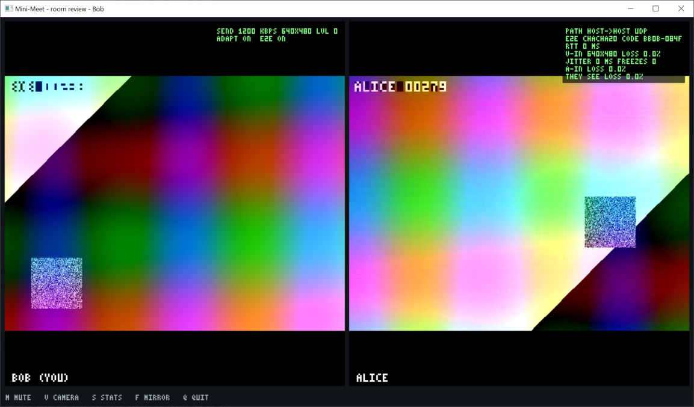
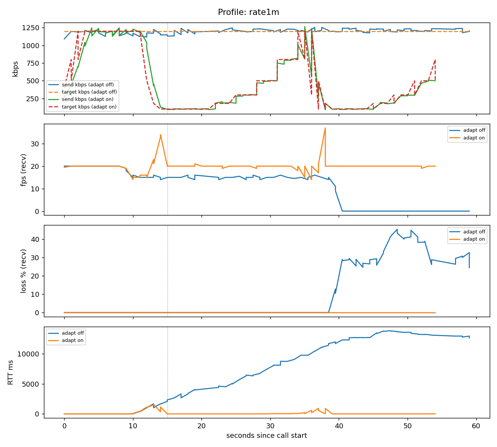
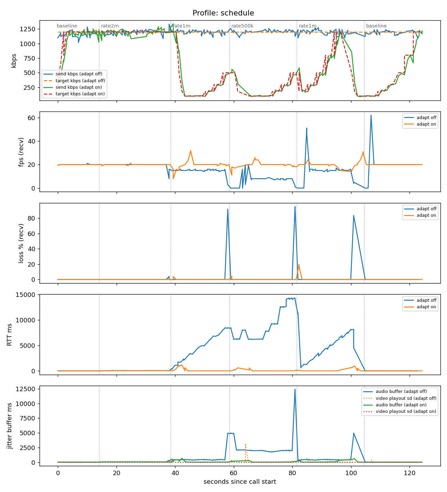
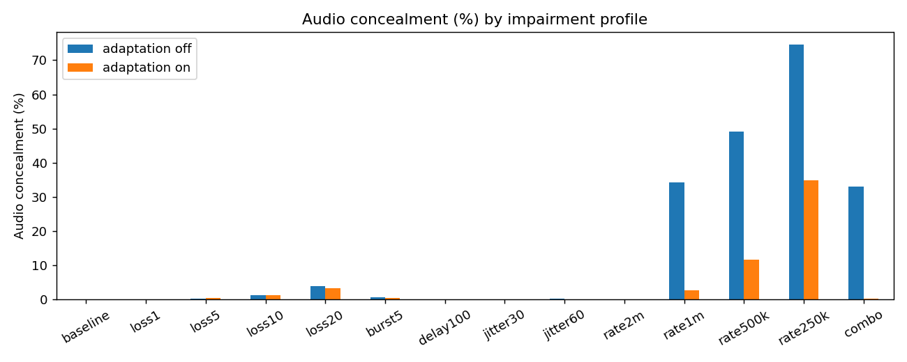

Mini-Meet is a 2–4 person audio/video calling application implemented from the socket level up in C. A TCP signalling server written by us introduces the participants. Each client discovers its public address with STUN and traverses NAT with UDP hole punching. VP8 video and Opus audio then flow directly between peers in our own RTP-style framing layer over UDP, encrypted end to end with X25519 key agreement and ChaCha20-Poly1305. The receiver uses an adaptive, timestamp-driven jitter buffer, and repairs or conceals losses with NACK retransmission, keyframe requests and Opus FEC/PLC. RTCP receiver reports drive an AIMD rate controller with slow start, a delay-based congestion signal and feedback-starvation detection.
We evaluated the system in 28 runs over Linux network namespaces with per-direction tc netem impairment, plus a jitter-buffer on/off experiment, a single call through changing bandwidth, a 4-person mesh test and a real call between two different networks. Random loss up to 5 % is invisible to the user. Without rate control, a 1 Mbit/s bottleneck drives RTT above 10 s (bufferbloat). With it the call stays at 20 fps with a 3 ms RTT. The jitter buffer reduces audio concealment under ±30 ms jitter from 88 % to 0.1 %, at the cost of about 140 ms of added delay. The real cross-network call connected peer-to-peer through both NATs (srflx→srflx).
Video calls combine two very different kinds of traffic. Call setup needs a few hundred bytes that must arrive reliably and in order. Media needs a continuous stream of time-critical packets, where a late packet is as useless as a lost one. The project builds both halves ourselves and measures how a real-time stream behaves when the network loses, delays, reorders or throttles packets.
| Brief asks for | Delivered |
|---|---|
| Working multi-party call with audio and video | 2–4 participants, full mesh, VP8 640×480 at 20 fps + Opus 32 kbps; Windows and Linux |
| Custom signalling server and documented protocol | mm-server, a line-based TCP protocol (Section 3) |
| NAT traversal across separate networks (STUN) | Own STUN client and server, UDP hole punching; Wi-Fi ↔ mobile hotspot connected srflx→srflx |
| Call quality under loss, jitter and bandwidth limits: how the system degrades and adapts | 28 netem runs with rate control off/on, a jitter-buffer on/off experiment, and one call through changing bandwidth (Section 10) |
| Architecture: media path vs signalling path | Section 2 |
| Beyond the brief | End-to-end media encryption, adaptive jitter buffer, recorded-file streaming, 72 unit-test checks, prebuilt Windows release |
| Milestone | Result |
|---|---|
| 1. Signalling server and two-party media path | mm-server + RTP-style VP8/Opus over UDP (Sections 3, 4) |
| 2. NAT traversal and multi-party topology | STUN + hole punching (Section 5); full mesh of up to 4, all 12 streams verified (Section 10.6) |
| 3. Quality instrumentation and adaptation behaviour | Per-second RTCP-based statistics; jitter buffer, loss repair and AIMD rate control (Sections 6, 7) |
| 4. Impairment evaluation, report and viva | tc netem evaluation (Section 10), this report |
Required tools: raw UDP + codecs (our framing over UDP with VP8 and Opus), STUN (own client and server), Python (evaluation analysis; a first Node.js/WebRTC prototype was used for comparison), tc netem, and Git.
The system consists of three programs: mm-server (signalling), mm-stun (an optional STUN server) and mm (the call client). All networking is our own code on plain sockets. Libraries are used only for capture and decoding of camera and file input (FFmpeg), the codecs (libvpx, libopus), the window and speakers (SDL2), and the cryptographic primitives (libsodium).
| Signalling path | Media path | |
|---|---|---|
| Purpose | Find peers, exchange network candidates and public keys | Carry audio and video |
| Endpoints | client ↔ mm-server | client ↔ client (full mesh) |
| Transport | TCP, newline-delimited text | UDP: RTP + RTCP + STUN on one port |
| Volume | A few hundred bytes per call setup | 0.1–1.2 Mbit/s per stream, continuous |
| Reliability need | Every line in order, so TCP fits | Late = useless, so UDP with selective repair |
| If the server dies | New joins fail | Running calls continue |
Client threads. main runs the SDL window and events. net runs one select() loop over the TCP and UDP sockets plus all timers (ICE checks, jitter-buffer playout, RTCP, NACK, statistics). video-in and audio-in capture and encode. One mutex protects the peer table and the sender state.

TCP is a byte stream, so a single recv() may return half a message or several. Every message is therefore one ASCII line ending in \n, at most 512 bytes, made of space-separated tokens. The receiver buffers bytes until a newline completes a line. Because the protocol is plain text, it can be driven by hand with telnet.
| Client → server | Meaning |
|---|---|
JOIN <room> <name> | Enter a room (max 4) |
CAND <to> <type> <ip> <port> | Send a network candidate |
KEY <to> <64 hex> | X25519 public key |
LEAVE · PING | Leave · keep-alive (5 s) |
| Server → client | Meaning |
|---|---|
JOINED <id> <room> [id:name…] | Accepted, who is present |
PEER_JOINED · PEER_LEFT | Membership changes |
CAND · KEY <from> … | Relayed, to → from |
PONG · ERROR <code> <text> | Reply · rejection |
C (newcomer) mm-server A |-- JOIN demo carol ---------->| | |<- JOINED c1 demo a1:alice ---|-- PEER_JOINED c1 carol ------>| |-- CAND a1 host/srflx ... -->|-- CAND c1 host/srflx ... ---->| |-- KEY a1 3f9a...c41d ------->|-- KEY c1 3f9a...c41d ------->| |<- CAND/KEY a1 ... -----------|<- CAND/KEY c1 ... ------------| |==== STUN checks to every candidate, both directions (hole punching) ====| |==== RTP/RTCP media, encrypted, peer-to-peer over UDP ==================|
Validation. The server rejects lines over 512 bytes (and closes the connection), names outside [A-Za-z0-9_-]{1,32}, malformed candidates and keys, and relaying to a peer outside the sender's room. It runs as a single thread with one select() loop (no locks), with FD_SETSIZE raised on Windows.
Liveness. The server drops a connection that has been silent for 20 s, and its peers receive PEER_LEFT. Testing showed that under heavy bufferbloat a client's PINGs can be stuck in the same queue as its media, so the server times it out while the call is still working. A client therefore keeps a peer for as long as that peer's media keeps arriving (it is removed 3 s after its packets stop), and it removes any peer silent for 30 s on its own, without the server.
STUN, RTP and RTCP share one UDP socket and are demultiplexed by their first byte (RFC 7983). STUN starts with 0–3 and carries the magic cookie 0x2112A442. RTP and RTCP start with 128–191, and RTCP is recognised by packet type 200–206 in the second byte (RFC 5761). The source address then identifies the peer, and the payload type identifies the stream.
0 1 2 3 0 1 2 3 4 5 6 7 8 9 0 1 2 3 4 5 6 7 8 9 0 1 2 3 4 5 6 7 8 9 0 1 +-+-+-+-+-+-+-+-+-+-+-+-+-+-+-+-+-+-+-+-+-+-+-+-+-+-+-+-+-+-+-+-+ |V=2|P|X| CC |M| PT | sequence number | +-+-+-+-+-+-+-+-+-+-+-+-+-+-+-+-+-+-+-+-+-+-+-+-+-+-+-+-+-+-+-+-+ | timestamp (media clock) | +-+-+-+-+-+-+-+-+-+-+-+-+-+-+-+-+-+-+-+-+-+-+-+-+-+-+-+-+-+-+-+-+ | SSRC (stream identifier) | +-+-+-+-+-+-+-+-+-+-+-+-+-+-+-+-+-+-+-+-+-+-+-+-+-+-+-+-+-+-+-+-+ | S K 0 0 0 0 0 0 | VP8 payload (video only) ... [16-byte AEAD tag]
| PT | Payload | Clock | Rules |
|---|---|---|---|
| 96 | VP8 | 90 kHz | 1-byte descriptor: S = first packet of a frame, K = keyframe. Marker bit M = last packet of the frame. Payload ≤ 1160 bytes, so IP packets stay around 1200 bytes, under the MTU. |
| 97 | VP8 retransmission | 90 kHz | Same bytes and sequence number as the original. The separate PT keeps repairs out of the loss statistics. |
| 111 | Opus | 48 kHz | One 20 ms mono frame per packet, 32 kbps, in-band FEC. The timestamp advances by 960 per packet. |
(int16_t)(a − b) > 0.A NAT rewrites the source address of outgoing packets and admits incoming packets only if they match a mapping it created. Two peers behind NAT therefore cannot simply send to each other. Mini-Meet uses a simplified ICE (RFC 8445):
XOR-MAPPED-ADDRESS. The address is XORed with the magic cookie so that NAT helpers do not rewrite it.CAND lines through the signalling server.USERNAME = "<their-id>:<my-id>". Each outgoing packet opens a mapping in the sender's own NAT, so the other side's packets can come back in. A request from an unknown address becomes a peer-reflexive candidate.Hole punching fails when both sides (or one symmetric side and one port-restricted side) are behind a symmetric NAT, which assigns a new public port per destination. The client detects this after 15 s and reports that a TURN relay would be needed.
| Live test | Candidates | Selected pair | Result |
|---|---|---|---|
| Laptop on college Wi-Fi (private 172.16.x, public 36.255.16.51) ↔ laptop on a mobile hotspot (private 10.129.x, public 152.57.86.31) | host + srflx on both | srflx→srflx, all 1404 samples | Connected 3 times (ICE 99–752 ms); about 9 minutes of calls |
Packets leave at even intervals (20 ms audio frames, 50 ms video frames) but arrive unevenly. Playing them on arrival gives choppy output. For every arriving packet the receiver records
offset = arrival time − media time (the RTP timestamp in µs), and plays media time T at T + P95(last 64 offsets).
About 95 % of packets are therefore already present when their turn comes, and playout follows the sender's pace rather than the network's. The delay adapts by itself: a few milliseconds on a clean link, about 140 ms under ±30 ms jitter and about 220 ms under ±60 ms. Using the 95th percentile instead of the maximum trades ~5 % late packets (which concealment hides) for much lower latency. A video frame is decoded only when it is complete and due. Audio adds a 25 ms margin so that the next packet, which carries the FEC copy, is usually present. A late packet is dropped but still updates the clock, which is how the buffer learns to grow.
| Mechanism | How it works |
|---|---|
| Gap → NACK | A sequence gap puts the missing numbers on a list. After a reordering wait of about 2 × jitter (5–80 ms) they are requested with RTCP Generic NACK (packet ID + 16-bit bitmask, up to 17 losses per entry), resent every 1.5 × RTT, at most 4 tries. |
| Retransmission | The sender keeps the last 1024 video packets and resends them as PT 97: selective-repeat ARQ with a deadline. |
| Skip + PLI | A frame not repaired within max(120 ms, 1.5 × RTT + 40 ms) is skipped. Later frames reference it, so the receiver waits for a keyframe and requests one with PLI (rate-limited to at least 1.5 × RTT apart). The visible effect is a freeze. |
| Opus FEC / PLC | A missing audio frame is rebuilt from the in-band FEC copy in the next packet if that has arrived, otherwise packet loss concealment extrapolates it. The encoder is told the measured loss rate so it can size the FEC. |
| Metrics | Per second: playout_sd_ms (standard deviation of shown-frame intervals), jb_delay_ms, freezes (a gap longer than max(3 × average, average + 150 ms)), audio concealment %. |
| Level | 0 | 1 | 2 | 3 (start) | 4 | 5 |
|---|---|---|---|---|---|---|
| Video bitrate | 1200 kbps | 800 | 500 | 300 | 180 | 100 |
| Resolution | 640×480 | 640×480 | 480×360 | 320×240 | 320×240 | 160×120 |
vpx_codec_enc_config_set). A resolution change restarts the encoder with a keyframe. In a mesh the encoder serves the worst receiver.crypto_kx derives the same two 256-bit session keys (one per direction) on both peers. The server only ever sees public keys, so it cannot decrypt media. Every RTP payload is sealed with ChaCha20-Poly1305 (AEAD). The 12-byte header stays readable, because demultiplexing and sequence numbers need it, but it is authenticated. The nonce is SSRC ‖ seq ‖ PT ‖ timestamp, which is unique per packet. RTCP is encrypted the same way with an index. A tampered packet fails the tag check and is dropped.USERNAME.| Module | Files | Role |
|---|---|---|
| Portable sockets | src/common/net.c | One API over Winsock and BSD sockets (WSAStartup/closesocket/ioctlsocket vs close/fcntl), TCP/UDP helpers, SIO_UDP_CONNRESET fix |
| Signalling | proto.c, mm_server.c, sig.c | Line framing, rooms, relay, heartbeat, client side |
| STUN / ICE | stun.c, mm_stun.c, ice.c | RFC 5389 encode/decode, STUN server, candidates, checks |
| RTP / RTCP | rtp.c | Headers, SR/NACK/PLI, RFC 3550 statistics, playout clock |
| Send side | media_in.c | FFmpeg capture or file (paced), VP8/Opus encoding, packetisation, retransmission history |
| Receive side | media_out.c | Jitter buffers, NACK/PLI, decoding, freeze detection, SDL window, audio mixing |
| Control / security | cc.c, crypto.c, netloop.c | AIMD controller, encryption, packet dispatch, statistics |
About 3,900 lines of C11, built with one Makefile on Linux (gcc) and Windows (MSYS2 MinGW-w64). A prebuilt Windows release with all DLLs runs without installation. make test runs 72 unit-test checks covering line framing, STUN encoding (including XOR mapping), RTP headers and sequence wrap-around, RTCP round trips (SR, NACK bitmask, PLI, 24-bit sign extension), RFC 3550 loss and jitter arithmetic, the playout clock, the AIMD controller (slow start, windowed baseline, standing queue), encryption, and tamper detection. System-level tests: 2- and 4-party calls on Windows and Linux, webcam and microphone, recorded-file streaming, and the cross-network call.
Two Linux network namespaces (mmA 10.10.0.1, mmB 10.10.0.2) are joined by a veth pair and behave like two separate hosts. tc netem runs on both veth ends, so each direction is impaired separately, like a real access link. Clients send a built-in test pattern (VP8, up to 640×480, 20 fps) and a tone (Opus), so every run has identical input. Each run is 10 s clean, then the profile applied mid-call, then 45 s recorded, for 14 profiles × adaptation off (fixed 1200 kbps) / on. Values are steady-state medians (means for loss and concealment). Freezes are summed over both receivers.
| Profile | netem (per direction) | Profile | netem (per direction) |
|---|---|---|---|
| loss1/5/10/20 | loss N% | jitter30/60 | delay 100ms ±30/60ms, normal |
| burst5 | Gilbert-Elliott bursty loss | rate2m/1m/500k/250k | rate N, 1000-packet FIFO |
| delay100 | delay 100ms | combo | 80 ms ±20 ms, 3 % loss, 1 Mbit/s |
| profile | adapt | video kbps | fps | height | loss % | jitter ms | RTT ms | freezes | audio conc. % | playout sd ms | audio buffer ms |
|---|---|---|---|---|---|---|---|---|---|---|---|
| baseline | off | 1205 | 20 | 480 | 0.0 | 0.1 | 0.2 | 0 | 0.0 | 1.4 | 27 |
| baseline | on | 1202 | 20 | 480 | 0.0 | 0.1 | 0.7 | 0 | 0.0 | 1.5 | 27 |
| loss1 | off | 1212 | 20 | 480 | 1.0 | 0.1 | 0.3 | 0 | 0.0 | 2.2 | 27 |
| loss1 | on | 1211 | 20 | 480 | 0.9 | 0.1 | 0.2 | 0 | 0.0 | 1.9 | 27 |
| loss5 | off | 1224 | 20 | 480 | 4.9 | 0.1 | 0.3 | 0 | 0.2 | 16.2 | 27 |
| loss5 | on | 685 | 20 | 360 | 5.1 | 0.2 | 0.3 | 0 | 0.4 | 16.3 | 26 |
| loss10 | off | 1218 | 20 | 480 | 9.9 | 0.1 | 0.9 | 2 | 1.3 | 23.2 | 27 |
| loss10 | on | 106 | 20 | 120 | 9.2 | 0.3 | 0.3 | 0 | 1.1 | 23.4 | 26 |
| loss20 | off | 1222 | 19 | 480 | 19.8 | 0.1 | 0.2 | 23 | 4.0 | 38.0 | 27 |
| loss20 | on | 104 | 20 | 120 | 20.8 | 0.2 | 0.3 | 15 | 3.2 | 40.8 | 26 |
| burst5 | off | 1188 | 20 | 480 | 2.5 | 0.1 | 4.6 | 0 | 0.7 | 3.8 | 27 |
| burst5 | on | 1224 | 20 | 480 | 2.1 | 0.1 | 4.0 | 0 | 0.5 | 2.3 | 26 |
| delay100 | off | 1218 | 20 | 480 | 0.0 | 0.1 | 200 | 0 | 0.0 | 1.4 | 27 |
| delay100 | on | 580 | 20 | 360 | 0.0 | 0.2 | 200 | 0 | 0.0 | 1.0 | 26 |
| jitter30 | off | 1372 | 20 | 480 | 1.0 | 33.5 | 187 | 1 | 0.1 | 12.4 | 140 |
| jitter30 | on | 278 | 20 | 240 | 0.8 | 33.8 | 200 | 0 | 0.1 | 4.7 | 143 |
| jitter60 | off | 1634 | 20 | 480 | 1.7 | 65.7 | 194 | 4 | 0.2 | 22.7 | 222 |
| jitter60 | on | 213 | 20 | 240 | 1.5 | 70.5 | 211 | 3 | 0.1 | 8.1 | 220 |
| rate2m | off | 1228 | 20 | 480 | 0.0 | 7.8 | 47 | 0 | 0.0 | 1.3 | 56 |
| rate2m | on | 1226 | 20 | 480 | 0.0 | 7.6 | 39 | 0 | 0.0 | 1.5 | 56 |
| rate1m | off | 923 | 15 | 480 | 13.6 | 13.6 | 10513 | 0 | 34.1 | 2.1 | 387 |
| rate1m | on | 198 | 20 | 240 | 0.0 | 3.4 | 2.8 | 0 | 2.7 | 1.2 | 28 |
| rate500k | off | 446 | 0 | 480 | 39.6 | 22.9 | 19414 | 2 | 49.0 | 5.8 | 476 |
| rate500k | on | 188 | 20 | 120 | 0.0 | 3.2 | 9.8 | 0 | 11.7 | 2.5 | 38 |
| rate250k | off | 229 | 4 | 480 | 24.7 | 31.6 | 17373 | 2 | 74.5 | 7.0 | 5073 |
| rate250k | on | 164 | 9 | 120 | 1.0 | 18.8 | 11707 | 6 | 34.8 | 5.2 | 476 |
| combo | off | 924 | 0 | 480 | 13.8 | 13.9 | 10054 | 9 | 33.0 | 2437 | 349 |
| combo | on | 231 | 20 | 240 | 2.7 | 14.0 | 199 | 64 | 0.3 | 41.6 | 82 |

The jitter profiles were repeated with the jitter buffer turned off (--no-jb: playout follows the fastest packet with only a 25 ms margin).
| Jitter (each way) | Rate control | Buffer | Audio concealed | Video playout sd | Freezes | Buffer delay |
|---|---|---|---|---|---|---|
| ±30 ms | off | off | 87.9 % | 25.2 ms | 1 | 25 ms |
| ±30 ms | off | on | 0.1 % | 12.4 ms | 1 | 140 ms |
| ±60 ms | off | off | 83.6 % | 40.7 ms | 13 | 25 ms |
| ±60 ms | off | on | 0.2 % | 22.7 ms | 4 | 222 ms |
| ±60 ms | on | off | 84.2 % | 53.0 ms | 32 | 25 ms |
| ±60 ms | on | on | 0.1 % | 8.1 ms | 3 | 220 ms |
Without a buffer most audio frames arrive after their 20 ms slot and must be concealed, and video frames are shown as unevenly as they arrive. The adaptive buffer brings concealment to about 0 %, at least halves the playout spread and cuts freezes (32 → 3 in the worst case). It pays for this with 140–220 ms of added delay, the fundamental smoothness-versus-latency trade-off of a jitter buffer.

srflx→srflx, median RTT 85 ms, loss < 0.6 %. The mobile hotspot's uplink buffered in bursts (RTT spikes to 1.15 s), and the controller followed them down and back up.--file, H.264 + AAC, looped): streamed in real time on Linux and Windows; the viewer received 640×480 at 20 fps with 0 % concealment.
Mini-Meet delivers working 2–4 person audio/video calls written in C on raw sockets, covering signalling, NAT traversal, framing, jitter buffering, loss repair, rate control and encryption. It runs on Windows and Linux and has been verified across two different real networks. The evaluation shows both halves of the real-time loop at work. The receiver-side jitter buffer turns uneven arrivals back into smooth playout (88 % → 0.1 % concealed audio under ±30 ms jitter). The sender-side rate controller, driven by receiver feedback, keeps a call usable on bandwidth-limited links where a fixed-rate stream collapses into seconds of delay. The remaining limitations are well-understood trade-offs of the design.
| Module | Topic → where in Mini-Meet |
|---|---|
| 1 Foundations | Layering/encapsulation (VP8/Opus → RTP → UDP → IP); sockets API (net.c, Winsock/POSIX); throughput, delay, jitter, latency (measured per second); network byte order |
| 2 Direct links | Framing (frames split at MTU, S/M bits; newline framing on TCP); error detection (sequence gaps); error correction (Opus FEC); reliable transmission (NACK = selective repeat with deadline) |
| 3 Internetworking | NAT, private vs public addresses, STUN, hole punching; MTU and fragmentation; why IP multicast is not used (application-level fan-out: mesh/SFU) |
| 4 End-to-end | UDP vs TCP; demultiplexing on one port; connection setup/teardown and record boundaries; adaptive retransmission timers from RTT; RTCP feedback; AIMD and delay-based congestion control; FIFO queues and bufferbloat; QoS metrics |
| 5 Security/apps | Threats and server hardening; end-to-end encryption (X25519, ChaCha20-Poly1305, safety code) vs IPsec; firewall traversal; Telnet-style text protocol; DNS resolution of the STUN server |
| 6 Contemporary | Per-second streaming telemetry (CSV) vs SNMP polling |
# Windows (MSYS2 MinGW64 shell) or Linux: build and test make && make test # a call (up to 4 people per room) bin/mm-server # signalling server, TCP 9000 bin/mm --server 127.0.0.1 --room demo --name Alice # webcam + microphone bin/mm --server 127.0.0.1 --room demo --name Bob --test # test pattern + tone bin/mm --server 127.0.0.1 --room demo --name Cara --file media/sample.mp4 # recorded media # across networks: expose the server with a TCP tunnel, then join with --server bore.pub:PORT bore local 9000 --to bore.pub # evaluation (inside WSL/Linux as root), then the graphs bash bench/run-matrix.sh SCHEDULE="baseline:15 rate2m:20 rate1m:20 rate500k:20 rate1m:20 baseline:20" bash bench/run-matrix.sh python3 analysis/plot.py results/eval_*.csv
Window keys: M mute, V camera, S statistics, F mirror, Q quit. Options: --no-adapt, --no-jb, --no-encrypt, --csv FILE, --list-devices.